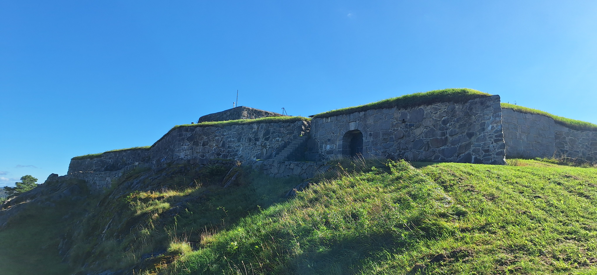

Fredriksten Festning: 210 år med motstand - Den siste svenske beleiringen
I 1814 stod Fredriksten Festning alene mot svenske tropper - en siste beleiring som skulle forme Norges skjebne. 210 år senere står festningen som et urørlig symbol på motstand og uavhengighet.
